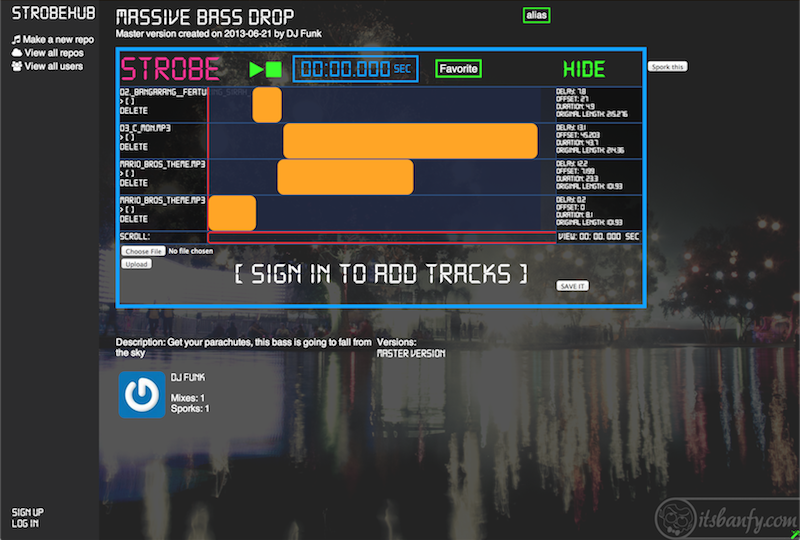

Hi. I am a software engineer and recent graduate of Dev Bootcamp. I grew up in the Chicago area, and recently moved back here after going to school in St. Louis and living in Austin. I like mountain biking, cooking, and going to the beach.
Here are some things I built during my 12 weeks at Dev Bootcamp:

Github for music, with an interactive multitrack audio editor.
:source:
Recommends movies you might like using and algorithm based on Pearson correlation and data from GroupLens Research.
:source:
Stack Overflow clone
:source: